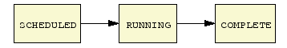

Last updated $Date: 2003-05-20 18:00:16 $
This document should provide enough information for other myGrid developers to make use of the joint IT Innovation / EBI / HGMP work on a new workflow language, its associated object model, parsers and views. If there isn't sufficient information here, please email me (tmo@ebi.ac.uk) and pester me into providing it, there's not much point in us doing all this work if you can't use it, right? In order to make all your workflow editing and document reading faster and more fun, I have added randomly garish colours to certain sections. These colours have no actual significance whatsoever, other than maybe to highlight the bits you need to look at if you're in a hurry.
The motivation for providing a new workflow language is not covered by this document, but please refer to http://taverna.sourceforge.net for more information if you so desire.
A note on stability - Taverna is an ongoing project, we reserve the right to change things mentioned here if we feel justified in doing so. It would be helpful to both us and yourself therefore if you were to let us know if you're using any of this, just a quick mention on one of the myGrid lists would be cool.
Tom & Darren
XScufl is the XML dialect of the Simple Conceptual Unified Flow Language. Operating at a higher level of abstraction than alternatives such as WSFL, Scufl aims to provide the following features:
Ideally one conceptual operation in the design of a workflow translates to one processor in a scufl definition. Although this may not always be possible, in general you can be fairly close most of the time.
In this document, the terms scufl and xscufl are used pretty much interchangably. Although there is actually a textual version called scufl (to distinguish it from the xml form) we haven't had time to bring that in synch with the rest of the project, so for now I'm afraid you'll have to use the XML form.
An XScufl file consists of the following tags, assuming that the namespace 's' has been defined as http://org.embl.ebi.escience/xscufl/0.1alpha
<s:scufl> |
This
is the top level tag enclosing a single scufl workflow definition. |
<s:processor> |
Defines a single atomic processing step, for example the seqret tool from Soaplab, or a single operation on an arbitrary web service. |
<s:link> |
Defines
a data link between two processors. |
<s:source> |
Defines
a workflow source, that is to say an externally visible input into the
workflow. Elements in the input.xml file map directly to these source
declarations. |
<s:sink> |
Defines a workflow sink, these map one to one to elements in the output from the workflow enactor. |
<s:coordination> |
Defines
a concurrency constraint, now fully implemented. |
<s:scufl version="0.1">
This tag must have a version attribute, currently the version should be '0.1'
<s:processor name="the_processor_name">
Processors have a name, this name may not include the ':' character and must be unique within the workflow definition. The immediate single child element of the processor defines the type of operation. Currently valid types are
<s:soaplabwsdl>http://url.to.your/soaplab/endpoint</s:soaplabwsdl>The soaplabwsdl processor type allows you to call a complete soaplab invocation in one unit. The endpoint should be the full URL to the service endpoint, so including, for example, edit::seqret at the end. Port names are extracted from the keys of the Soaplab input and output Map objects.
<s:arbitrarywsdl> <s:wsdl>http://url.to.your/wsdl/definition/file.wsdl</s:wsdl> <s:porttype>port_type_name</s:porttype> <s:operation>operation_name</s:operation> </s:arbitrarywsdl>The arbitrarywsdl type allows a single call on a web service. Port names are derived from the part names in the input and output messages for the specified operation.<s:talisman> <s:tscript>http://url.to.your/talisman/tscript/file.xml</s:tscript> </s:talisman>The talisman type allows you to invoke a Talisman session as a service in your workflow. Currently this doesn't use Talisman as a remote service, and will run the application in the same address space as the enactor itself. Although not ideal in the long run this should work fine for now. The tscript tag contains the full URL to a tscript XML file; this in turn specifies the Talisman application definition, a set of inputs and outputs and the operational behavious of this service in terms of Talisman trigger invocations. The port names are taken directly from the tscript file. The tscript definitions must be accessible at processor creation time, but are not required after this stage. The scripts look like this (in another file) :
<tscript url="http://localhost:8080/regex.xml"
trigger="Do Substitution">
<input name="inputString">field:SourceField</input>
<output name="outputString">field:SourceField</output>
</tscript>The script above directs the creation of a Talisman application session from the regex.xml file, then that first a string should be read from the port named 'inputString' and placed in the field with 'field:SourceField' as its locator within the page (see Talisman documentation for exactly what this means), then that a trigger called 'Do Substitution' should be run, then that the same Talisman field should be copied to the output port 'outputString'. As it happens, this script creates a processor that reads a string in and replaces all occurences of a certain substring with 'foo' on its output port. There would normally be multiple inputs and outputs, just that this application only has one of each.
Processors communicate by named ports, these can be either input or output ports, and are automatically built in the object model when one of the above processor types is constructed. For this reason, there is no explicit port declaration in the scufl language. In general, where a port reference is required, it is of the form 'processor_name:port_name', hence the ban on ':' in processor names (the parser code is simple and would be upset by it).
<s:link>
Data links, or data constraints in the original language spec and the object model, represent a flow of information from an output port to an input port. The link syntax is very simple :
<s:link> <s:input>prophet:infile_direct_data</s:input> <s:output>prophecy:outf</s:output> </s:link>
The link syntax currently does not allow naming of links, if you particularly need this then we could add it, at the moment a link is uniquely specified by start and end ports, so a name is not really adding any information (duplicate links are not permitted). As described above, the name for the port consists of the processor name (within the scope of this workflow definition), followed by a single colon ':' followed by the name of a port of the appropriate type in that processor. Supplying an invalid name will result in an exception being thrown on data model creation.
<s:source>
This defines a workflow source. You use these to get input data into the workflow. The source is named, and this name can be used (without any processor prefix and ':') in data links to connect a port in an internal processor to a workflow source.
<s:source>input_sequence</s:source>
The input document that the enactor reads contains named inputs; these names should match with the names of your workflow sources. In addition, should this workflow be used as a processor (nested workflow) in the future, the source names will be mapped directly to input port names for the resultant processor.
<s:sink>
This is similar to the source directive defined above, but defines an overall workflow sink. As with the source, this may be used in a data link to send a processor's output to the workflow sink, thus making it visible outside the workflow.
<s:sink>some_output</s:sink>
The output document produced by the workflow enactor contains named outputs with a one to one mapping between these named outputs and workflow sinks.
<s:coordination>
The coordination constraints restrict the execution of processors contingent on some gate condition being met. This is required when you have a process where the stages must execute in a certain order and yet there is no direct data dependency between them. An example of this is invocation of Soaplab using the derived interfaces; we first create a job which returns a job ID - no problem, we can block the next stage on that ID being returned, but then we have to set inputs, run the job, get the results and clean up, none of which have data links. So, we have a way to say 'only allow this processor to go from scheduled to running if this other processor has status completed'. In all probability you won't need to do this very often.
<s:coordination name="testcoordination">
<s:condition>
<s:target>restrict_mutant</s:target>
<s:state>COMPLETED</s:state>
</s:condition>
<s:action>
<s:target>compare</s:target>
<s:statechange>
<s:from>SCHEDULED</s:from>
<s:to>RUNNING</s:to>
</s:statechange>
</s:action>
</s:coordination>
The above coordination block states that the processor 'compare' should only be allowed to transition from 'scheduled' to 'running' if the processor 'restrict_mutant' has achieved status 'completed'. Available states are scheduled, running, completed and aborted.
XScufl Language Support
The myGrid workflow enactment engine supports almost all the XScufl language constructs. The only exception is that there is not full support for the coodination constraints. In particular the enactment engine does not support all possible state transitions that an XScufl coordination constraint can define. This is essentially because the enactment engine has its own state models that enforce correct behaviour for the activities it controls. At present the enactment engine will only allow coordination constraints that conform to the following state transition:

At present the most common reason for using coordination constraints is to represent a dependency between two processors that is not actually a data dependency, this is essentially the case where you would like processor A to execute and complete before processor B commences execution. In XScufl this would be represented precisely as shown above for the coordination constraint called 'testcoordination', given a suitable substitution of 'A' for 'restrict_mutant' and 'B' for 'compare'. If the enactment engine receives a coordination constraint that does not conform to this restriction then the workflow will be rejected and no execution will take place..
Configuring myGrid Workflow Enactment Engine
It is very easy to switch on myGrid Enactment Engine support for the XScufl workflow language. The process only involves copying some libraries and making some configuration changes. Note it is necessary to use Java 1.4.1 for the Enactment Engine. The complete process is described here.
- Install the myGrid Enactment Engine as directed by its accompanying user manual. You should install version 0.1.4.2 or later.
- From within the Taverna source distribution directory 'taverna1.0' execute 'ant enactor.ext.jar'. This builds the taverna extensions library.
- Copy 'taverna1.0/build/tavernaenactor.jar' to 'mygrid-wfenactor/lib'.
- Copy 'taverna1.0/devlib/servlet.jar' to 'mygrid-wfenactor/lib'.
- Copy 'taverna1.0/lib/talisman1.4.5.11.jar' to 'mygrid-wfenactor/lib'
For Standalone Enactor continue by:
- Edit the myGrid Enactment Engine configuration file 'mygrid-wfenactor/conf/standalone/mygrid.properties'. In particular change the value for 'mygrid.workflow.enactor.api.class' to 'uk.ac.soton.itinnovation.taverna.enactor.TavernaWorkflowEnactor'
- Edit the file 'mygrid-wfenactor/bin/runenactor.bat' by adding '..\lib\tavernaenactor.jar', '..\lib\servlet.jar' and '..\lib\talisman1.4.5.11.jar' to the classpath argument.
For Web Service Enactor continue by:
- Edit the myGrid Enactment Engine configuration file 'mygrid-wfenactor/conf/webservice/mygrid.properties'. In particular change the value for 'mygrid.workflow.enactor.api.class' to 'uk.ac.soton.itinnovation.taverna.enactor.TavernaWorkflowEnactor'
- Edit the file 'mygrid-wfenactor/bin/runwsclient.bat' by adding '..\lib\servlet.jar' to the classpath argument.
- Redeploy the myGrid Enactment Engine as directed by its manual.
- Copy 'taverna1.0/build/tavernaenactor.jar' to $TOMCAT_HOME/webapps/axis/WEB-INF/lib'
- Restart Tomcat.
- Off you go.
You can use the sample standalone and gui clients for the myGrid Enactment Engine. There are sample emboss tutorial workflows, input and user files in the directory 'taverna1.0/src/uk/ac/soton/itinnovation/taverna/enactor/broker/test'. You should find that this workflow executes far quicker than its WSFL alternative.
The steps above assume that you have a copy of the Taverna project checked out locally, and that you have also obtained the appropriate Talisman jar file from somewhere (at the moment this is included in the Taverna lib directory, obviously as the jar is versioned in the name you should use the current copy in your distribution).
Copied from sourceforge's 'how to use anonymous cvs' documentation :
Anonymous CVS Access
This project's SourceForge.net CVS repository can be checked out through anonymous (pserver) CVS with the following instruction set. When prompted for a password for anonymous, simply press the Enter key.
> cvs -d:pserver:anonymous@cvs.sourceforge.net:/cvsroot/taverna login > cvs -z3 -d:pserver:anonymous@cvs.sourceforge.net:/cvsroot/taverna co taverna1.0Updates from within the module's directory do not need the -d parameter.
In order to build Taverna, you may need to edit the build.xml. Specifically, if you don't have the jikes compiler from IBM you'll need to change the 'build.compiler' property from 'jikes' to 'modern'. Once that's done, you can build the enactor plugin jar as described in the section previous to this one, or use the other targets in the build file, see the readme.html inside your checked out project directory for more build options.